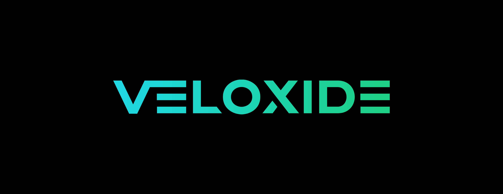
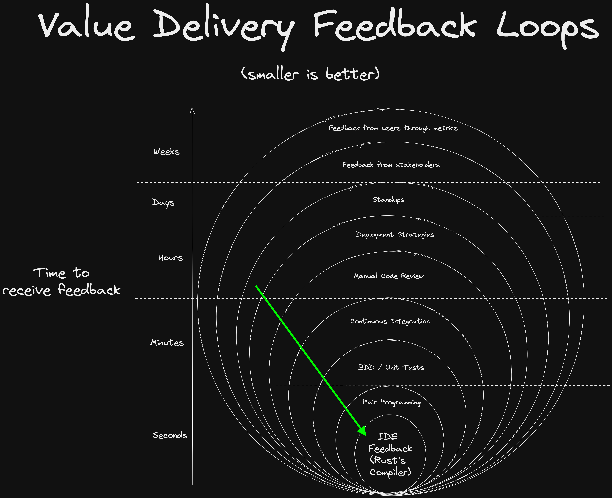
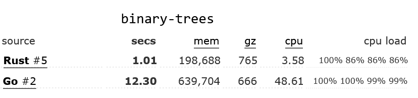
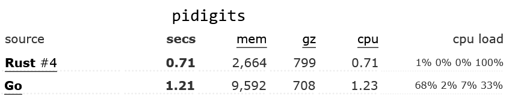

Introduction

Veloxide simplifies the web API development process, letting you focus on delivering value to your consumers. With Veloxide, you can enjoy a modern, easy-to-use, and fast technology stack that can be integrated with your business logic.
Veloxide comes pre-built with an example bank acount domain. The intended use of Veloxide is to replace this domain with your own domain, following the architecture as laid out by Veloxide.
Key Qualities
- Fast to code: Veloxide increases the speed of development by being simple, flexible and easy to use. Rust naturally shifts bugs left to the compiler, so less time is spent debugging code, and more time is spent delivering value.
- Fewer bugs: All components of Veloxide are written in Rust, which is famous for its safety and reliability [1] [2] [3]
- Highly performant: Veloxide is built on top of the Tokio async runtime and Axum framework, which leverage the power of Rust's async/await syntax and zero-cost abstractions to give blazingly fast bare-metal performance.
- Cloud native: Veloxide comes pre-configured with OpenTelemetry for distributed tracing and a /metrics endpoint preconfigured for collection from Prometheus.
- Standards-based: Veloxide leverages the open standards for APIs: OpenAPI, JSON Schema and GraphQL. You choose how you want your API to be consumed.
Why Rust?
Rust's rich type system
Rust's rich type system is one of its most notable features, and it provides numerous benefits to developers.
Ability to express problems and solutions precisely
Rust's rich type system provides developers with the ability to express problems and solutions precisely by allowing for highly specific type definitions and pattern matching. Rust's pattern matching capabilities enable developers to write code that is highly expressive and can handle complex data structures with ease. This level of precision and expressiveness allows developers to communicate their intent more clearly, reducing the likelihood of misunderstandings or errors in their code. Furthermore, the ability to express problems and solutions precisely also makes it easier for other developers to understand and maintain code, even if they are not familiar with the specifics of the problem domain. Overall, Rust's rich type system enables developers to write code that is highly precise, expressive, and easy to understand, which leads to more robust and maintainable software.
Secure and reliable: No null pointer dereferences or data races
Rust's unique ownership model and type system eliminates many common programming errors such as buffer overflows and null / nil pointer dereferences, which can lead to bugs and security vulnerabilities. The type system ensures that code is correct at compile time, catching many errors that might otherwise slip through and cause bugs or crashes at runtime. This saves developers a significant amount of time and effort, as they can catch and fix issues earlier in the development process. Secondly, Rust's type system is designed to prevent common programming mistakes, such as null pointer dereferencing or data races, that can lead to security vulnerabilities or hard-to-debug issues.
Speed of development
Rust's compiler shrinks the feedback loop between writing code and seeing the results. This makes it easy to iterate quickly and experiment with new ideas.

Metaprogramming with Macros
Macros in Rust are a powerful tool that allows developers to write code that can generate other code at compile-time (metaprogramming), making it possible to automate repetitive tasks, reduce boilerplate code, and achieve greater code reuse. Rust's macro system is highly flexible and expressive, allowing developers to define complex transformations on the code, such as code generation, syntactic transformations, and type inference. This makes Rust macros an excellent choice for tasks such as domain-specific language implementation, serialization and deserialization, and code optimization, among others. Furthermore, Rust's macro system is designed to be safe and predictable, preventing accidental code execution or memory errors, and producing clear error messages when issues arise.
Legibility: Rust code focuses on the "Happy Flow"
Rust's ? syntax, Result and Option types, lack of null/nil, and match keyword combine to make it easy to write code that focuses on the "happy flow" of the program. This makes it easy to write code that is easy to read, understand and maintain.
Rust vs Go comparison
Click to take a look at some Rust vs Go code comparisons
Go: Do something example
func DoSomething() (*MyResultType, error) {
result, err := SomeOperation()
if err != nil {
return nil, err
}
return result, nil
}
In this example, the function DoSomething calls SomeOperation and checks the error value. If an error occurs, it is returned, otherwise the function returns the result.
Now let's take a look at the equivalent Rust code:
Rust: Do something equivalent
#![allow(unused)] fn main() { fn do_something() -> Result<MyResultType, Error> { let result = some_operation()?; Ok(result) } }
In Rust, the ? operator is used to propagate errors up the call stack. If an error occurs in some_operation, it is returned as a Result type, and the ? operator automatically returns the error from the some_operation function up the stack.
Here's how the outer function might look like in Go:
Go (outer function)
func doSomethingElse() (*MyResultType, error) {
val, err := SomeOperation()
if err != nil {
if errors.Is(err, ErrorKindNotFound) {
fmt.Println("Xyz resource was not found")
return nil, ErrorKindNotFound
}
fmt.Println("A different error message")
return nil, err
}
return val, nil
}
The indentation here for such a simple case makes the code increasingly difficult to read. The if statements are nested, and the return statements are scattered throughout the function. A reference to nil occurs 4(!) times, and all this combines to make it much harder follow the intended, "happy" flow of the code.
Here's how Rust's match statements can be used to handle different error conditions, reduce indentation, and keep the focus on the happy flow:
Rust (outer function) equivalent
#![allow(unused)] fn main() { fn do_something_else() -> Result<MyResultType, Error> { let result = match some_other_operation() { Ok(val) => val, Err(ErrorKind::NotFound) => { println!("Xyz resource was not found") return err; }, Err(err) => { println!("A different error message") return err; }, }; Ok(result) } }
In this example, the match statement is used to handle different error conditions. If the some_other_operation call returns an Ok value, the result is assigned to result. If the call returns a NotFound error, the function returns an error with the same type. If the call returns any other error, the function returns that error.
Rust's error handling, ? syntax, and match statements work together to keep the focus on the happy flow by providing concise and expressive ways to handle errors and propagate them up the call stack. This makes it easier for developers to write correct and maintainable code, and it makes it easier for other developers to read and understand the code. The value in this is hard to overstate.
Ecosystem and Community support
Rust has a active community of developers who contribute to its ecosystem of libraries and tools. There is often a "best-in-class" crate for any given problem at hand, meaning you can learn one API and you needn't learn another. Rust libaries have a tendency to end up "finished", often requiriing little to no maintenance. This means that you can focus on your application's domain logic, rather than the plumbing.
Performance
When evaluating the performance of programming languages, individual benchmarks may be vulnerable to manipulation and difficult to interpret. To mitigate this issue, the Benchmarks Game has assessed multiple algorithms for each language, comparing various stats from their performance to provide a more comprehensive evaluation of language tradeoffs.
In the Benchmarks Game's evaluation of various algorithms, Rust demonstrated superior optimization compared to Go. The most optimized Rust code outperformed the most optimized Go code by at least 30% across all tested algorithms, with some benchmarks showing even greater differences. For instance, in the binary-trees benchmark, Rust's most optimized code was 12 times faster than Go's. Additionally, in many cases, even the least optimized Rust code was faster than the most optimized Go code.


Conclusion
Overall, Rust provides a better developer experience by providing a shorter feedback loop and more legible code, Rust code is considered more secure than any other language out there, it's more performant than just about all languages except C, and it has a vibrant community of developers who contribute to its ecosystem of libraries and tools. These factors make Rust an outstanding choice for developing secure, reliable, and performant software of almost any kind (data science (Python) and frontend development (Typescript) are clear exceptions, for now).
Why wouldn't you choose rust for your next project?
Additional Resources
Domain Driven Design (DDD)
Domain-driven design (DDD) is an approach to software development that aims to align the software model with the business domain it serves. It involves several key concepts:
-
Ubiquitous Language: DDD emphasizes the importance of establishing a common language between the development team and the business stakeholders. This language should be used consistently throughout the project to ensure that everyone is on the same page.
-
Bounded Contexts: DDD recognizes that different parts of a software system may have different contexts and requirements. Bounded contexts define the boundaries of a specific part of the system and the language used within it.
-
Entities and Value Objects: Entities are objects that have a unique identity and can change over time. Value objects, on the other hand, have no identity and are immutable. Both are important concepts in DDD for representing the business domain.
-
Aggregates: Aggregates are a collection of related objects that are treated as a single unit. They are responsible for maintaining consistency and enforcing business rules within a bounded context.
-
Domain Events: Domain events represent significant changes in the state of the domain model. They are used to communicate between different parts of the system and can trigger actions in other bounded contexts.
-
Repositories: Repositories are used to store and retrieve domain objects from a data store. They abstract away the details of data access and provide a simple interface for the application to interact with.
DDD is a holistic approach to software design that prioritizes understanding the business domain and building a model that reflects it. By using a common language and focusing on the core concepts of the domain, developers can create more maintainable and scalable software systems.
Domain Driven Design in Veloxide
The concepts of Aggregates, Entities, Value Objects, and Domain Events are all implemented in Veloxide using the CQRS crate. Further docs on the CQRS crate can be found here.
Repositories are implemented using traits to provide a simple interface for the application to interact with, although this implementation is subject to change.
The concepts of Bounded Contexts and Ubiquitous Language are important concepts to apply when designing a domain model, however are not implemented in Veloxide as there isn't a real domain for the stack itself.
Layered Architecture is detailed in the design patterns section.
Design Patterns
Veloxide implements the following design patterns:
- CQRS: Veloxide uses Command Query Responsibility Segregation (CQRS) to help simplify and optimize the design by separating the read (view) and write (command) models.
- Event Sourcing: Veloxide uses Event Sourcing to persist domain events to the database. Event sourcing is used to tie the read and write models together, as well as providing a complete and accurate audit trail of changes made to a system, which can be useful for debugging, compliance, and various other purposes.
- Layered Architecture: The codebase is divided into layers, each with a specific responsibility, as per the principles of Domain-Driven Design. This makes the application easier to understand and maintain.
CQRS & Event Sourcing
Documentation for the CQRS-ES Crate
The book describing the CQRS-ES crate used in Veloxide can be found here.
Layered Architecture
Domain Driven Design Layers
Veloxide implements the layers as specified in domain driven design.

Presentation Layer
The Presentation Layer is responsible for handling user interactions and presenting information to users. It is where the user interface resides and it interacts with the application layer to get and process the required data. The presentation layer should be designed in such a way that it is decoupled from the application layer to enable the application layer to evolve independently. It is important to design the presentation layer with a user-centric approach that focuses on the user's needs and requirements, rather than solely on technical implementation details. The presentation layer should be easy to maintain, extend and change, and it should follow the SOLID principles of software design.
Application Layer
The Application Layer is responsible for coordinating business logic and translating high-level commands from the Presentation Layer into lower-level operations that can be performed by the Domain Layer. The Application Layer acts as a facade that hides the complexity of the Domain Layer from the Presentation Layer and other clients. It is responsible for transaction management, security, and validation. It should also enforce business rules and policies, and orchestrate the interactions between different parts of the system. The Application Layer should be designed in such a way that it is reusable, extensible, and testable. It should be loosely coupled to the other layers of the system, enabling each layer to evolve independently.
Domain Layer
The Domain Layer represents the core of the business logic and knowledge of the system. It encapsulates the domain concepts, business rules, and behaviors of the system. The Domain Layer should be designed with a domain-centric approach that focuses on the understanding and modeling of the domain, rather than technical implementation details. It should be designed to be reusable and extendable, enabling the domain model to evolve as the business requirements change. The Domain Layer should also be decoupled from the infrastructure and application layers, allowing it to be tested independently and to support multiple user interfaces and data sources. The Domain Layer is critical to the success of a Domain Driven Design project as it is the source of competitive advantage and differentiation for the system.
Infrastructure Layer
The Infrastructure Layer is responsible for providing support to the other layers by providing the necessary technical infrastructure such as databases, messaging systems, and external services. The Infrastructure Layer should be designed to be decoupled from the other layers to enable them to evolve independently. It should also provide abstractions and interfaces that shield the Domain Layer and Application Layer from the complexities of the underlying infrastructure. The Infrastructure Layer should be designed to be modular and replaceable, enabling the system to adapt to changing technical requirements and to support different deployment environments. The Infrastructure Layer is critical to the success of a Domain Driven Design project as it provides the foundation upon which the other layers can build.
Architecture Decision Records
Under construction.
1. Record architecture decisions
Date: 2023-03-16
Status
Accepted
Context
We need to record the architectural decisions made on this project.
Decision
We will use Architecture Decision Records, as described by Michael Nygard.
Consequences
See Michael Nygard's article, linked above. For a lightweight ADR toolset, see Nat Pryce's adr-tools.
2. Use Rust for backend software development
Date: 2023-03-16
Status
Accepted
Context
We need to select a language to write the backend software in.
We expect our chosen language to be:
- Easy to learn
- Easy to maintain
- Fast to develop with / prove a concept
- Secure
- Reliable
- Performant
- Expected to remain a relevant language in the industry
Decision
We will use Rust.
Consequences
- New developers to the project have to learn Rust, however we believe it is a fantastic investment, akin to learning Kubernetes or SQL.
- Not going fullstack with Typescript means we do not get to leverage the tooling and ecosystem of Typescript technologies.
Components of Veloxide
Veloxide is comprised of the following components, the higher level of which we will cover in more detail in the following sections.
| Component | Crate(s) of Significance | Notes |
|---|---|---|
| Web Server | Axum, Tower | The endpoint path and timestamp metadata for each issued command are captured and stored in the database in the events table. |
| GraphQL | async-graphql, async-graphql-axum | |
| OpenAPI Doc Generation | Utopia | Serves interactive documentation at /swagger-ui |
| Async Runtime | Tokio | |
| Tracing | Tracing & Tracing OpenTelemetry & OpenTelemetry-OTLP & Tracing Log & | Use the #[instrument] macro to automatically generate new spans whenever a function is called! Also, all logs are automatically embedded in Trace spans by default! |
| Metrics | Axum Prometheus | Metrics are pre-configured for collection at /metrics |
| Serializing & Deserializing | Serde (yaml & json) | |
| Command Query Responsibility Segregation & Event Sourcing | cqrs-es | |
| Async Database Driver (SQL) | SQLx | SQL queries are checked against the database for validity at compile time |
| Database agnostic, declarative database schema and Object Relational Mapping | prisma-rust-client | |
| Mocking | mockall | Leverage the power of Rust's macro system by using #[automock] to automatically create mocks! |
| Error Handling | thiserror | |
| Behavior Driven Development / Cucumber Testing | Cucumber | |
| Loading env variables & .env file | Dotenvy | |
| Improved assertion difference identification | Pretty Assertions | Highlights the difference in tests character by character |
| Supercharged derive attributes | Derivative | |
| Code coverage generation | cargo-llmvm-cov | |
| Automatic Typescript Binding Generation | ts-rs | Automatically generates TypeScript interfaces for your Rust view models! |
Web Framework: Axum
GraphQL
Introduction to GraphQL
GraphQL is a query language for APIs that was developed by Facebook in 2012 and has since gained popularity among developers for a number of reasons:
-
Improved developer experience: With GraphQL, developers can focus on defining the data schema and let the GraphQL engine handle the complexities of querying the data. This can lead to faster development times and a more intuitive development experience.
-
Flexibility: Because GraphQL allows clients to specify exactly what data they need, it enables greater flexibility in how data is retrieved and displayed. It also allows for easier iteration and evolution of APIs over time.
-
Better documentation: GraphQL APIs come with self-documentation capabilities, which means that developers can easily discover what data is available and how to query it without having to consult external documentation.
-
Strong typing: GraphQL has a strong type system that allows for better validation of queries and can help catch errors earlier in the development process.
-
Increased efficiency: GraphQL allows you to request only the data that you need, which reduces the amount of data transferred over the network and can result in faster response times.
Consequently, using GraphQL can lead to faster, more efficient, and more flexible API development, which can improve the developer experience and ultimately lead to better products.
GraphQL in Veloxide
Veloxide implements a iGraphQL web interface on http://localhost:8080/graphql by default. This interface allows you to explore the GraphQL schema and execute queries against the API.
Examples
Open a new account:
mutation {
bankAccountMutation(
id: "1234",
command: {
openAccount: {
accountId: "1234"
}
}
){
accountId
balance
writtenChecks
accountTransactions{
description
amount
}
}
}
Query an existing account:
query {
bankAccountQuery(id: "1234") {
accountId
balance
writtenChecks
accountTransactions{
description
amount
}
}
}
Query only the account balance:
query {
bankAccountQuery(id: "1234") {
balance
}
}
Deposit money into an account::
mutation {
bankAccountMutation(
id: "1234",
command: {
depositMoney: {
amount: 123
}
}
){
accountId
balance
writtenChecks
accountTransactions{
description
amount
}
}
}
Withdraw money from an account:
mutation {
bankAccountMutation(
id: "1234",
command: {
withdrawMoney: {
amount: 123,
atmId: "ExampleAtmIdHere"
}
}
){
accountId
balance
writtenChecks
accountTransactions{
description
amount
}
}
}
Documentation for the GraphQL crate
The book describing the async-graphql library used in Veloxide can be found here.
Observability
Introduction
In the context of web APIs, Observability refers to the ability to gain insights into the performance and behavior of a system by collecting and analyzing data from its components. This includes metrics such as response times, error rates, and resource utilization, as well as logs, traces, and other telemetry data. Observability is essential for maintaining the reliability and efficiency of cloud-based systems, especially as they become more complex and distributed. By leveraging observability tools and techniques, developers and operators can quickly identify and diagnose issues, optimize performance, and improve the overall user experience. Ultimately, observability enables organizations to better understand and control their cloud environments, leading to improved business outcomes and customer satisfaction.
Tracing
Introduction to Tracing
Tracing is a technique used in software applications to track and log the flow of requests as they traverse through different components of the system. Implementing tracing in a software application is important because it provides visibility into the performance and behavior of the system. By logging the various stages of a request, tracing can help developers identify bottlenecks and errors in the system, as well as the root cause of these issues. Tracing can also be used to optimize the performance of the system by identifying areas where processing time can be reduced. Additionally, tracing can be used to improve the user experience by providing insights into user behavior and usage patterns. Overall, implementing tracing is essential for building scalable, reliable, and observable software systems, which are critical in today's world of complex, distributed systems.
OpenTelemetry
OpenTelemetry is an open-source observability framework that provides a standardized way of instrumenting software applications to collect telemetry data such as traces, metrics, and logs. It is a merger of two similar projects: OpenCensus and OpenTracing. OpenTelemetry provides a vendor-agnostic approach to instrumentation, allowing developers to instrument their applications once and then use any number of tracing, logging, or monitoring tools for analysis. OpenTelemetry supports most programming languages and platforms. It also supports various telemetry data types such as distributed traces, metrics, and logs, and provides a standardized way of propagating context across different components of the system. OpenTelemetry is rapidly gaining adoption as a standard for observability instrumentation in modern cloud-native applications.
Monitoring
A /metrics endpoint is a URL endpoint that exposes operational metrics and monitoring data for a web application. It typically returns a standardized format of metrics data, such as in the form of JSON or plaintext.
The value of a /metrics endpoint for a web application is that it provides insights into the performance and health of the application. It allows developers, system administrators, and other stakeholders to monitor and track key performance indicators (KPIs) related to the application's usage, behavior, and resource consumption.
Some examples of metrics that a /metrics endpoint might expose include:
-
Request counts and response times: These metrics can provide insights into how many requests the application is handling, how quickly it is responding to them, and whether there are any issues with latency or performance.
-
Error rates: This metric can help identify issues with the application, such as server errors, timeouts, or other problems that might be affecting the user experience.
-
CPU and memory usage: These metrics can help identify whether the application is experiencing any resource constraints or performance issues that could affect its stability or reliability.
-
Cache hit rates: This metric can provide insights into how often the application is able to serve requests from its cache, which can help identify potential opportunities for optimization or tuning.
Overall, a /metrics endpoint provides valuable insights into the inner workings of a web application, allowing developers and administrators to more effectively monitor, troubleshoot, and optimize the application's performance and reliability. The /metrics endpoint exposed by Veloxide is scraped by the Prometheus supporting container.
Logging
Introduction to Logging
Logging is a technique used in software applications to record events that occur during the execution of a program. These events can include information such as errors, warnings, and other diagnostic data. Implementing logging in a software application is important because it provides visibility into the performance and behavior of the system. By logging events as they occur, developers can identify issues in the system, such as errors or performance bottlenecks, and then use this information to diagnose and resolve the issues. Logging can also be used to improve the user experience by providing insights into user behavior and usage patterns. Overall, implementing logging is essential for building scalable, reliable, and observable software systems, which are critical in today's world of complex, distributed systems.
Bunyan
Bunyan is a logging library originally for Node.js applications. It was named after Paul Bunyan, the mythical lumberjack from American folklore, as a metaphor for cutting through the logs. Using Bunyan has several advantages:
- Structured logging: Bunyan logs are JSON objects, making it easy to filter, analyze, and process the log data. This structured approach allows for better log management and analysis in comparison to unstructured text logs.
- Third-party integrations: Bunyan integrates well with third-party log management and analysis tools, such as Logstash, Elasticsearch, Kibana or Grafana Loki. This allows you to leverage powerful log analysis and visualization tools to gain better insights into your application's performance and behavior.
- Readable logs: Bunyan provides a command-line tool called 'bunyan' that can be used to pretty-print log output, making it more human-readable.
You will have the bunyan CLI tool installed if you have ran just install-required in the root of the project. The bunyan feature flag is enabled by default. If you want to test the locally, run the application and pipe the output into bunyan.
Database
Postgres
Postgres is a popular open source database. It is a relational database, which means that it stores data in tables. It is also a SQL database, which means that it uses the SQL language to query and manipulate data. Usage of relational databases is recommended.
SQLx
Prisma
Getting Started
Prerequisites
Prior to getting started you will need to have the following installed:
Set up your project
Install the Veloxide CLI:
> cargo install veloxide
Create your own app:
> veloxide init my-app
# Go to the created folder
> cd my-app
# Install the required tools for development
> just install-required
# Set the environment to use the Postgres config, start the supporting containers, and then run the app
> just dev-postgres
# Once done, open `my-app/` in your IDE
# Happy Coding!
Folder Explanations
This document explains the purpose of each folder in the repository.
- src: This folder contains the source code for the application.
- src/application: This folder contains the application layer.
- src/domain: This folder contains the domain layer.
- src/presentation: This folder contains the presentation layer, containing things like handlers, view models, the GraphQL server and the Axum web server.
- tests: This folder contains the integration tests for the application, such as the BDD tests. Unit tests are found in the tests module found in the same file as the things they're testing.
- docker: This folder contains the configurations for the containers spun up by
docker-compose.
Testing
- Cover the domain with cucumber tests or the framework provided by cqrs-es
- Use Mockall everywhere else
Tips
- The OpenAPI interactive documentation is available at
http://localhost:8080/swagger-ui/ - The GraphQL Playground is available at
http://localhost:8080/graphql - There is a postman-collection that supports both the REST and GraphQL API at
veloxide-demo.postman_collection.json - More helper commands can be shown by running
justin the root directory.
Supporting Containers
Veloxide comes pre-configured with the following supporting containers found in the docker-compose.yml file:
- Tempo: Traces will be sent to Tempo using OTLP, which can be accessed at
http://localhost:3000/explore?. - Prometheus will be available at
http://localhost:9090. - Grafana: Will be available at
http://localhost:3000. The default username and password are bothadmin. Prometheus is already configured as the default data source. - Postgres will be be listening on port
5432for new connections. The connection string is loaded from the environment variableDATABASE_URL, which is pre-configured in the .env file.
Postgres
Postgres is a popular open source database. It is a reliable choice for a database. Other good options may include but are not limited to MySQL and Supabase.
Tempo
Grafana Tempo is an open-source, distributed tracing backend designed for observability and troubleshooting of complex, distributed systems. It is designed to help developers troubleshoot and monitor complex distributed systems by providing visibility into the interactions between different components and services. Tempo collects, analyzes, and visualizes tracing data to provide a comprehensive picture of the system's performance, latency, and error rates. With Tempo, developers can easily trace requests across different services, identify bottlenecks, and optimize the system for better performance. Tempo supports multiple languages and platforms and various tracing data formats, making it an ideal tracing tool for modern, cloud-native applications. Additionally, Tempo provides advanced features such as distributed tracing and root cause analysis, making it suitable for identifying performance bottlenecks and other issues across complex, distributed systems. It also has a highly scalable architecture that can handle large volumes of tracing data, and integrates with other observability tools such as Prometheus, Loki and Grafana to provide a comprehensive observability solution. Sending traces to Tempo is a powerful way to gain deep visibility into the behavior and performance of a system, making it an excellent choice for observability instrumentation.
Veloxide and Tempo
Veloxide is pre-configured to create traces automatically and send them to Tempo.
Prometheus
Introduction to Prometheus
Prometheus is an open-source monitoring and alerting system that is widely used in the DevOps and cloud computing communities. The value of Prometheus lies in its ability to provide powerful and flexible monitoring capabilities for cloud-native applications, microservices architectures, and other distributed systems.
Some of the key benefits and value propositions of Prometheus are:
-
Scalability: Prometheus is designed to handle large-scale, highly dynamic environments, with support for horizontally scaling across multiple instances and federating metrics across different systems and clusters.
-
Time-series data: Prometheus is optimized for collecting and querying time-series data, which is critical for monitoring and troubleshooting modern distributed systems that generate vast amounts of metrics over time.
-
Flexibility: Prometheus supports a wide range of metrics formats, including the popular Prometheus format and other industry-standard formats like OpenMetrics and Graphite.
-
Query language: Prometheus comes with a powerful query language called PromQL, which allows users to slice and dice metrics data in real-time and build complex queries and aggregations.
-
Alerting: Prometheus includes a built-in alerting system that allows users to define rules and conditions for triggering alerts based on specific metrics and thresholds.
-
Integrations: Prometheus integrates with a wide range of other tools and systems, including Grafana for data visualization, Kubernetes for container orchestration, and many other popular DevOps tools.
Overall, the value of Prometheus lies in its ability to provide a flexible, scalable, and powerful monitoring and alerting solution that can help DevOps teams and other stakeholders to gain deep insights into the performance and health of their applications and infrastructure, enabling them to proactively identify and resolve issues before they become critical.
Veloxide and Prometheus
Veloxide exposes a /metrics endpoint by default, which the Prometheus instance spun up by docker compose will scrape by default.
Grafana
Introduction to Grafana
Grafana is a popular open-source data visualization and monitoring tool that provides a wide range of benefits and value propositions for users. Here are some of the key benefits of using Grafana:
-
Data Visualization: Grafana provides a flexible and intuitive interface for creating and customizing data visualizations, allowing users to easily create charts, graphs, dashboards, and other visualizations that can help them gain insights into their data.
-
Integrations: Grafana supports a wide range of data sources, including popular databases like MySQL, PostgreSQL, and Microsoft SQL Server, as well as cloud services like AWS CloudWatch, Google Cloud Platform, and Microsoft Azure. This makes it easy for users to pull data from multiple sources and create unified dashboards and visualizations.
-
Dashboard Sharing and Collaboration: Grafana allows users to easily share and collaborate on dashboards with other users, either within the organization or with external stakeholders. This can help teams to work more effectively together and ensure that everyone has access to the same data and insights.
-
Alerting and Notifications: Grafana includes a built-in alerting system that allows users to set up alerts based on specific metrics or thresholds, and receive notifications via email, Slack, or other channels when those alerts are triggered. This can help teams to quickly identify and respond to issues before they become critical.
-
Extensibility: Grafana is highly extensible, with a robust plugin architecture that allows users to add new features and functionality to the platform. This makes it possible to customize Grafana to meet specific business requirements and use cases.
Overall, Grafana provides a powerful and flexible platform for data visualization and monitoring, allowing users to gain deep insights into their data, collaborate effectively with others, and quickly identify and respond to issues as they arise.
Veloxide and Grafana
The Grafana instance spun up by docker compose is configured to use Prometheus as a datasource, which in turn collects the metrics from /metrics. The Grafana instance is configured to use the Prometheus datasource by default. At the time of writing, there are no dashboards configured by default, but you can create your own however.